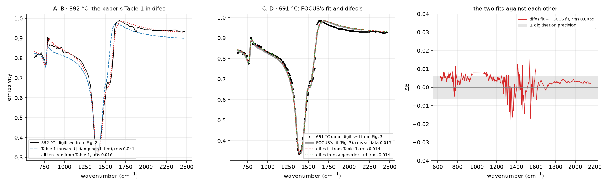
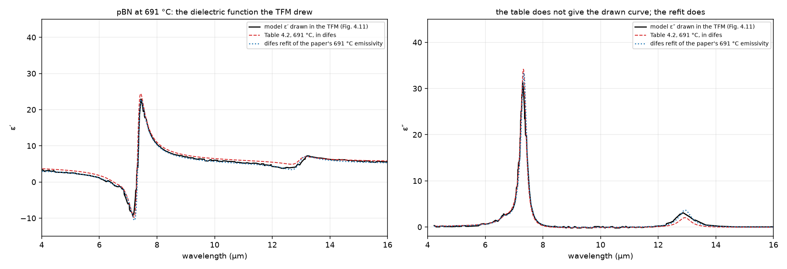
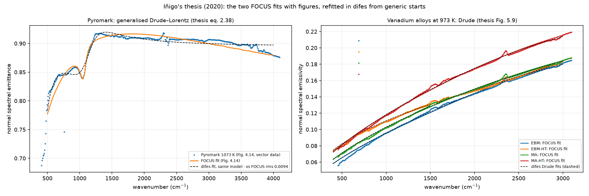
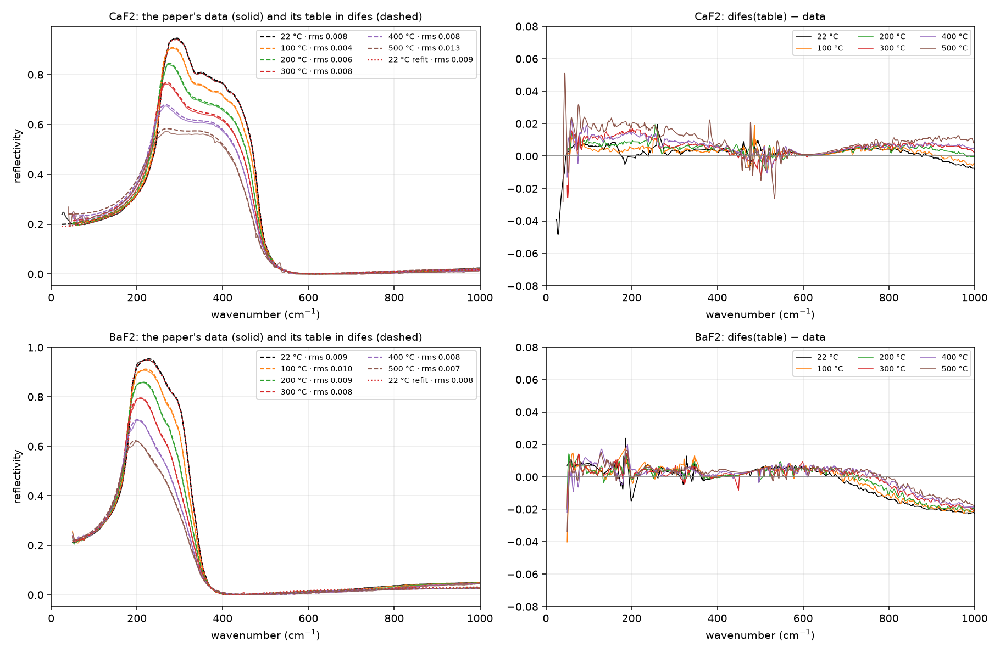
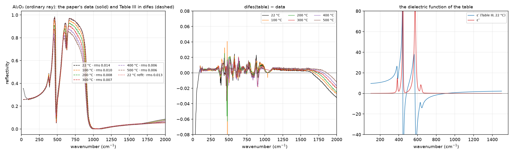

Two analyses done with FOCUS and printed in the literature, redone in difes from their tables and figures. Where the paper printed everything, difes reproduces it without a fit; where it did not, difes’s fit meets FOCUS’s curve within the digitisation.
Josu's proposal of 2 October: beyond Irati's data, check difes against published work that used FOCUS, digitising the figures where no data files exist. Two works were chosen for being complete on paper and different in model: a four-parameter anisotropic emissivity from the group's own circle, and FOCUS's Gaussian self-energy on the fluorides. The scripts and the extracted data are in difes/examples/papers/; the sessions are under Examples in the app ("Paper · …").
Two extractors were written for this. For a bitmap figure, digitize.py finds the plot frame, calibrates the axes from the known ranges, masks one colour, reads one point per column for a line or the centroids of blobs for markers, excludes the legend, converts wavelength to wavenumber, and writes an overlay image to check by eye; on a 900‑pixel figure it is good to about 5\times10^{-3} of the axis span. For a vector figure in a PDF, vectorize.py reads the plotted polylines themselves with PyMuPDF and calibrates the axes on the positions of the tick labels, so a rotated page or an inset is no obstacle; the precision is that of the authors’ plotting.
I. González de Arrieta, T. Echániz, R. Fuente, L. del Campo, D. De Sousa Meneses, G. A. López, M. J. Tello, J. Quant. Spectrosc. Radiat. Transfer 194 (2017) 1–6. Emissivity of pBN between 390 and 1050 °C, 4–16 \mum, fitted with FOCUS: two Kurosawa modes (\perp and \parallel to the c axis), the random‑orientation average \varepsilon_{av} = \tfrac{1}{3}\varepsilon_\parallel + \tfrac{2}{3}\varepsilon_\perp, and a Maxwell–Garnett correction for carbon inclusions (\varepsilon_i = 5, f = 8\,\%). Table 1 prints the frequencies and dielectric constants at 392 °C; the dampings only for the perpendicular mode. Fig. 2 shows the spectra at 392, 691 and 1043 °C; Fig. 3 the data and FOCUS’s fit at 691 °C. All were digitised.

| test | result |
|---|---|
| Table 1 forward at 392 °C (the two parallel dampings fitted, as they are not printed) | rms 0.041 against the digitised spectrum. Above 2300 \(\mathrm{cm}^{-1}\) the table gives \(E = 0.90\) where the spectrum reads 0.94, and the band edge sits 50 \(\mathrm{cm}^{-1}\) too low: the table as printed does not regenerate the figure. |
| refit at 392 °C, all ten parameters free | rms 0.016; \(\varepsilon_{\infty\perp}\) \(5.19 \to 3.89,\) \(\Omega_{LO\perp}\) \(1601 \to 1664,\) \(\Omega_{LO\parallel}\) \(829 \to 891,\) the TO frequencies within 3 \(\mathrm{cm}^{-1}\) of the table |
| fit at 691 °C of the digitised data of Fig. 3 | rms 0.014 against the points; FOCUS's own curve sits 0.015 from the same points; difes's curve and FOCUS's agree to rms 0.0055, the digitisation precision |
| the same from a generic start (frequencies −5 %, dampings 50) | the same curve (rms 0.014); frequencies and dielectric constants within a few percent of the fit from Table 1, the LO frequencies the least determined |
The lesson is the one the chromium gave: the curves agree between the two programs to the precision of the data, here the precision of a digitised figure; the parameters are what the model lets them be. That Table 1 does not reproduce Fig. 2 is a finding about the table (a transcription, a different \varepsilon_\infty convention, or values from another fit) that the authors, who are colleagues, can settle; their raw spectra would also replace the digitisation.
The TFM behind the paper (4 October 2026). The first author’s master’s thesis (UPV/EHU, 2016) holds the same work with more of it printed: Table 4.2 gives the Kurosawa parameters at eight temperatures (the paper’s Table 1 is its 392 °C column), and Fig. 4.11 draws the model’s own \varepsilon' and \varepsilon'' at 691 °C next to a Kramers–Kronig inversion of the measured reflectivity, which the paper does not show. That figure is the model as the fitting program computed it, so it tests the table directly, on \varepsilon rather than on emissivity (examples/papers/pbn2017/tfm_inigo.py, axes calibrated on the tick marks).

| drawn in the TFM | Table 4.2 in difes | difes refit of the paper's data | |
|---|---|---|---|
| \(\varepsilon'\) at 4–5 \(\mu\)m | 2.76 | 3.39 | 2.70 |
| \(\varepsilon'\) maximum | 22.9 | 24.4 | 22.7 |
| rms of \(\varepsilon'\) over 4–16 \(\mu\)m | — | 0.90 | 0.63 |
| \(\varepsilon_{\infty\perp}\) | 3.89 reproduces the drawn level with the table's other values | 5.18 | 4.10 |
The dielectric function the thesis drew is the one difes’s refit finds, not the one its table gives: the printed \varepsilon_{\infty\perp} is not the value of the plotted model, in the thesis as in the paper, while the TO frequencies agree in all three. This narrows the question for the author to one number and its convention. The same thesis also records, in its Table 4.3, a double-damping Drude fit of a cBN/TiCN composite at eight temperatures, a model difes has as extdrude; and the author’s earlier TFG (2015) fitted a cBN cutting tool with RefFIT rather than FOCUS, Drude plus Lorentz, with full parameter tables.
The PhD thesis (4 October 2026). The same author’s doctoral thesis (UPV/EHU, 2020) uses FOCUS in three places, none with a parameter table: a causal-Voigt fit of the loss function of alumina around its 932 \mathrm{cm}^{-1} LO mode (inset of Fig. 4.7, only the frequency is quoted); the generalised Drude–Lorentz fit of the thesis’s eq. 2.38 to the normal spectral emittance of a Pyromark coating at 1073 K (Fig. 4.14), which the text itself calls semi-quantitative; and Drude fits (eq. 2.34) to four vanadium alloys at 973 K (Fig. 5.9), whose results are shown only as a chart of \sigma = \omega_p^2/4\pi\gamma and \varepsilon_\infty (Fig. 5.10). The figures are vector drawings, so the measured points and FOCUS’s fitted curves are read from the PDF paths exactly, without pixel digitising (examples/papers/inigo_thesis/thesis_fits.py). difes then fits the same model to the same data from a generic start, and the question is whether it lands on FOCUS’s curve.

| sample, 973 K | difes vs FOCUS's curve, rms | max | \(\varepsilon_\infty\) | \(\omega_p\) (\(\mathrm{cm}^{-1}\)) | \(\gamma\) (\(\mathrm{cm}^{-1}\)) | \(\sigma=\omega_p^2/4\pi\gamma\) (\(\mathrm{cm}^{-1}\)) |
|---|---|---|---|---|---|---|
| EBM | 0.0007 | 0.0014 | 376 | 72 850 | 5 500 | 76 800 |
| EBM-HT | 0.0008 | 0.0011 | 33 | 42 540 | 3 680 | 39 100 |
| MA | 0.0005 | 0.0007 | 225 | 98 600 | 12 170 | 63 600 |
| MA-HT | 0.0006 | 0.0015 | 252 | 61 000 | 5 960 | 49 700 |
The vanadium case is clean: for all four alloys difes’s Drude fit falls on FOCUS’s drawn curve to better than 0.001 in emissivity, the line width of the figure, and the conductivities it implies sit within the 0 to 80 000 \mathrm{cm}^{-1} axis of the thesis’s Fig. 5.10. The \varepsilon_\infty values are large and poorly determined, as a Drude term’s \varepsilon_\infty is when only emissivity below 3100 \mathrm{cm}^{-1} constrains it; FOCUS’s drawn curves carry no more information about them than difes’s fits do, and the thesis itself discusses them as effective values.
The Pyromark case is the first one in this programme where difes and FOCUS, given the same model and the same data, end in different places, and it is instructive. difes’s fit has rms 0.0086 against the measured points; FOCUS’s drawn curve has 0.0130 against the same points, and the two curves differ by 0.0094 rms, 0.022 at most. Fitting the same eight-parameter model to FOCUS’s drawn curve instead of to the data reproduces that curve to 0.0004, so FOCUS’s result is a genuine member of the model family and difes evaluates the model as FOCUS does; the two programs simply stopped in different minima of a shallow problem, the oscillator at 1060 \mathrm{cm}^{-1} with a width of 105 \mathrm{cm}^{-1} and a heavily overdamped Drude term in FOCUS’s solution against a wide oscillator at 1083 \mathrm{cm}^{-1} and a narrow Drude term in difes’s. On a fit its author describes as semi-quantitative, with eight free parameters and a single smooth spectrum, the better residual is difes’s, and the difference is a statement about the problem, not about either program’s optics.
T. Passerat de Silans, I. Maurin, P. Chaves de Souza Segundo, S. Saltiel, M.-P. Gorza, M. Ducloy, D. Bloch, D. De Sousa Meneses, P. Echegut, arXiv:0905.4710 (2009). Reflectivity of \mathrm{CaF_{2}}, \mathrm{BaF_{2}} and sapphire from 22 to 500 °C, fitted with FOCUS: one phonon whose damping is a self‑energy of Gaussian bands with their Kramers–Kronig partners (the paper’s eqs. 3–4, FOCUS’s anharmonic phonon). Tables I and II print every parameter at six temperatures; Figs. 1 and 2 are vector graphics, so the measured curves were read exactly. In difes the model is one expression: phonon_anharmonic(x, S, Ω, −2Ω·Σ gaussian_kkg(x, Aₙ, ω₀ₙ, γₙ)) on top of \varepsilon_\infty.

| T (°C) | \(\mathrm{CaF_{2}}\) · rms, 0–1000 \(\mathrm{cm}^{-1}\) | \(\mathrm{CaF_{2}}\) · band 100–700 | \(\mathrm{BaF_{2}}\) · rms, 0–1000 \(\mathrm{cm}^{-1}\) | \(\mathrm{BaF_{2}}\) · band 100–700 |
|---|---|---|---|---|
| 22 | 0.0078 | 0.0040 | 0.0088 | 0.0053 |
| 100 | 0.0042 | 0.0042 | 0.0095 | 0.0044 |
| 200 | 0.0057 | 0.0055 | 0.0087 | 0.0041 |
| 300 | 0.0078 | 0.0078 | 0.0077 | 0.0044 |
| 400 | 0.0082 | 0.0078 | 0.0076 | 0.0058 |
| 500 | 0.0133 | 0.0130 | 0.0071 | 0.0051 |
The paper states a measurement accuracy of 2–3 % and its fits lie on the data in the figures; difes, computing the paper’s numbers, lands on the data to 0.4–1.3 %, every dielectric function passive. A refit at 22 °C with everything free moves the curve by less than the measurement noise (\varepsilon_\infty 2.02 \to 2.03 for \mathrm{CaF_{2}}, 2.12 \to 2.22 for \mathrm{BaF_{2}}), so the printed parameters are a minimum for difes as they were for FOCUS. This settles that difes’s Gaussian self‑energy is FOCUS’s, on the material FOCUS’s authors chose to show it on.
The third case the previous page announced. \mathrm{Al_{2}O_{3}} with the electric field perpendicular to the c axis, 22 to 500 °C, four phonons, each with its own Gaussian self‑energy (one Gaussian for phonons 1, 2 and 4, four for phonon 3): 41 parameters per temperature, all printed. The six measured curves of Fig. 3 are drawn as a single black path in the PDF; the extractor cuts it where the wavenumber jumps back and names the pieces by their band maximum, which decreases with temperature.

| T (°C) | 22 | 100 | 200 | 300 | 400 | 500 |
|---|---|---|---|---|---|---|
| rms, 0–2000 \(\mathrm{cm}^{-1}\) | 0.0138 | 0.0101 | 0.0084 | 0.0067 | 0.0062 | 0.0061 |
| rms, 300–1000 \(\mathrm{cm}^{-1}\) | 0.0083 | 0.0121 | 0.0093 | 0.0071 | 0.0067 | 0.0069 |
| band maximum, model / data | 0.975 / 0.986 | 0.954 / 0.953 | 0.930 / 0.928 | 0.904 / 0.904 | 0.875 / 0.876 | 0.853 / 0.857 |
The four‑phonon model with Gaussian self‑energies reproduces the measured reflectivity to 0.6–1.4 % at every temperature, every dielectric function passive; the largest difference is at 22 °C on the sharp 440 \mathrm{cm}^{-1} peak, where the drawn curve reaches 0.986 and the table 0.975, a sharpness the plot’s own resolution limits. A refit of the strengths, frequencies and (_) at 22 °C moves the frequencies by less than 1 % and the rms from 0.0138 to 0.0131: the printed values are a minimum for difes too.